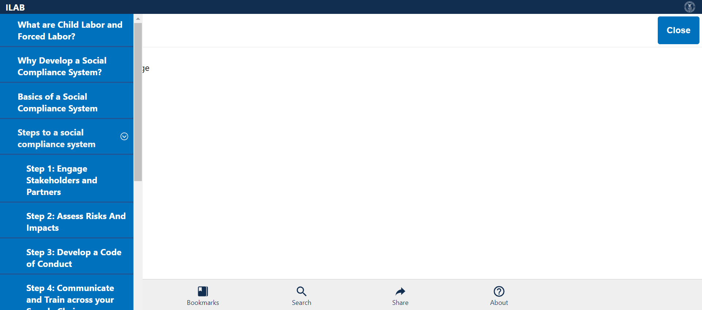
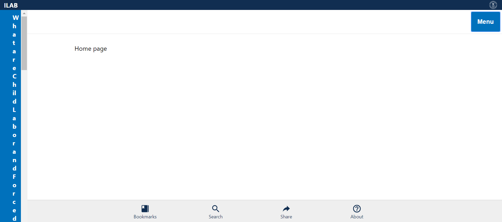
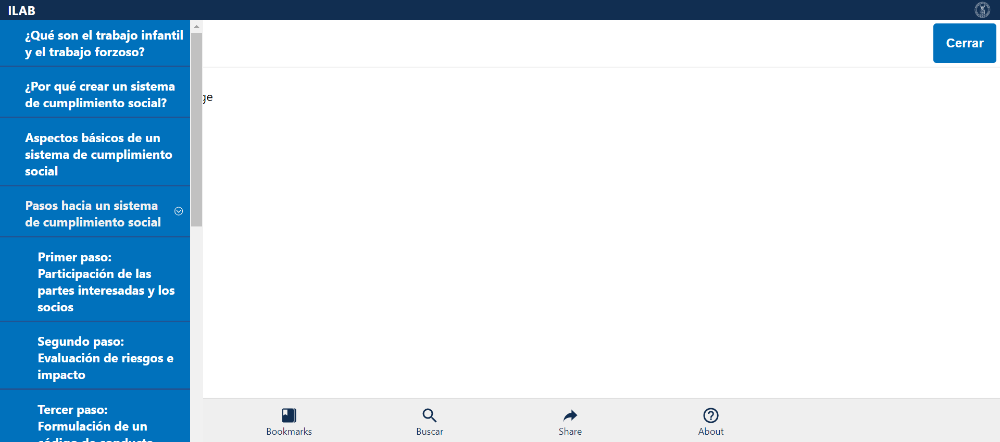
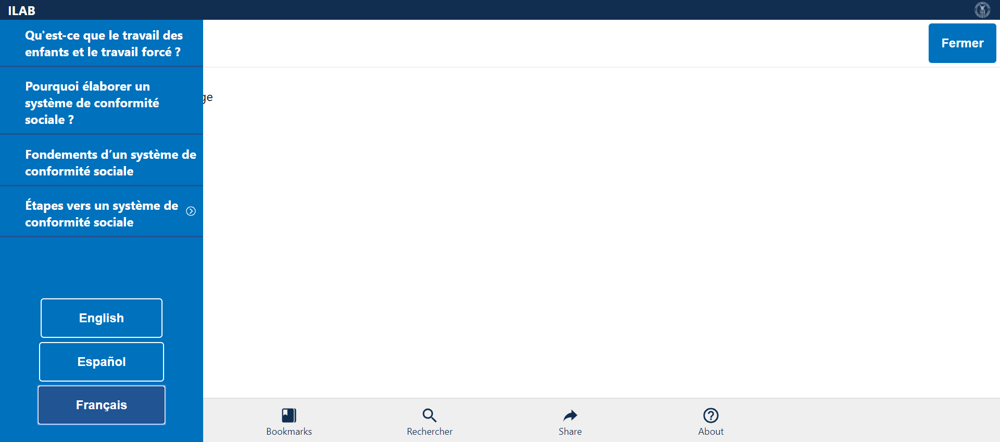

Tests
2 test(s) passed
1 test(s) failed, 0 others
Steps
88 step(s) passed
4 step(s) failed, 86 others
Tests
-
Verify Steps in English Mar 10, 2019 04:16:37 PM passMar 10, 2019 04:16:37 PM Mar 10, 2019 04:16:50 PM 0h 0m 12s+549msVerify Step Items in English
Status Timestamp Details check_circle 4:16:37 PM Comply Chain Logo is Displayed info_outline 4:16:38 PM 
check_circle 4:16:38 PM ILAB is displayed info_outline 4:16:38 PM check_circle 4:16:38 PM MENU is Displayed info_outline 4:16:38 PM check_circle 4:16:40 PM MENU is opened Successfully info_outline 4:16:40 PM 
check_circle 4:16:40 PM What are Child Labor and Forced Labor? link is displayed info_outline 4:16:40 PM check_circle 4:16:40 PM What are Child Labor and Forced Labor? link Verified info_outline 4:16:41 PM 
check_circle 4:16:41 PM Why Develop a Social Compliance System? link is displayed info_outline 4:16:41 PM check_circle 4:16:41 PM Why Develop a Social Compliance System? link Verified info_outline 4:16:41 PM check_circle 4:16:41 PM Basics of a Social Compliance System link is displayed info_outline 4:16:42 PM 
check_circle 4:16:42 PM Basics of a Social Compliance System link Verified info_outline 4:16:42 PM check_circle 4:16:42 PM Steps to a social compliance system is displayed info_outline 4:16:42 PM check_circle 4:16:42 PM Steps to a social compliance system Verified with Expandable Arrow Mark info_outline 4:16:43 PM 
check_circle 4:16:43 PM Steps to a social compliance system Expanded info_outline 4:16:43 PM check_circle 4:16:43 PM Step 1: Engage Stakeholders and Partners is displayed info_outline 4:16:44 PM 
check_circle 4:16:44 PM Step 1: Engage Stakeholders and Partners is Verified info_outline 4:16:44 PM check_circle 4:16:44 PM Step 2: Assess Risks And Impacts is displayed info_outline 4:16:44 PM check_circle 4:16:44 PM Step 2: Assess Risks And Impacts is Verified info_outline 4:16:45 PM 
check_circle 4:16:45 PM Step 3: Develop a Code of Conduct displayed info_outline 4:16:45 PM check_circle 4:16:45 PM Step 3: Develop a Code of Conduct Verified info_outline 4:16:46 PM  check_circle 4:16:46 PM Step 4: Communicate and Train across your Supply Chain displayed info_outline 4:16:46 PM check_circle 4:16:46 PM Step 4: Communicate and Train across your Supply Chain Verified info_outline 4:16:46 PM check_circle 4:16:46 PM Step 5: Monitor Compliance is displayed info_outline 4:16:47 PM 
check_circle 4:16:47 PM Step 5: Monitor Compliance Verified info_outline 4:16:47 PM check_circle 4:16:47 PM Step 6: Remediate Violations displayed info_outline 4:16:47 PM check_circle 4:16:47 PM Step 6: Remediate Violations Verified info_outline 4:16:48 PM 
check_circle 4:16:48 PM Step 7: Independent Review displayed info_outline 4:16:48 PM check_circle 4:16:48 PM Step 7: Independent Review Verified info_outline 4:16:48 PM check_circle 4:16:48 PM Step 8: Report Performance displayed info_outline 4:16:49 PM 
check_circle 4:16:49 PM Step 8: Report Performance Verified info_outline 4:16:49 PM check_circle 4:16:49 PM Steps to a social compliance system Collapsed info_outline 4:16:50 PM  check_circle 4:16:50 PM MENU is closed Successfully info_outline 4:16:50 PM check_circle 4:16:50 PM MenuVerification_English Test Case PASSED -
Verify Steps in Español Mar 10, 2019 04:16:56 PM failMar 10, 2019 04:16:56 PM Mar 10, 2019 04:17:07 PM 0h 0m 11s+242msVerify Step Items in Español
Status Timestamp Details check_circle 4:16:56 PM Comply Chain Logo is Displayed info_outline 4:16:56 PM 
check_circle 4:16:56 PM ILAB is displayed info_outline 4:16:56 PM check_circle 4:16:56 PM Menú is Displayed info_outline 4:16:57 PM 
check_circle 4:16:59 PM Menú is opened Successfully info_outline 4:16:59 PM 
check_circle 4:16:59 PM ¿Qué son el trabajo infantil y el trabajo forzoso? link is displayed info_outline 4:17:00 PM 
check_circle 4:17:00 PM ¿Qué son el trabajo infantil y el trabajo forzoso? link Verified info_outline 4:17:00 PM check_circle 4:17:00 PM ¿Por qué crear un sistema de cumplimiento social? link is displayed info_outline 4:17:00 PM check_circle 4:17:00 PM ¿Por qué crear un sistema de cumplimiento social? link Verified info_outline 4:17:01 PM 
check_circle 4:17:01 PM Aspectos básicos de un sistema de cumplimiento social link is displayed info_outline 4:17:01 PM check_circle 4:17:01 PM Aspectos básicos de un sistema de cumplimiento social link Verified info_outline 4:17:01 PM check_circle 4:17:01 PM Pasos hacia un sistema de cumplimiento social is displayed info_outline 4:17:02 PM  check_circle 4:17:02 PM Pasos hacia un sistema de cumplimiento social Verified with Expandable Arrow Mark info_outline 4:17:02 PM check_circle 4:17:02 PM Steps to a social compliance system Expanded info_outline 4:17:02 PM check_circle 4:17:02 PM Primer paso: Participación de las partes interesadas y los socios is displayed info_outline 4:17:03 PM 
check_circle 4:17:03 PM Primer paso: Participación de las partes interesadas y los socios is Verified info_outline 4:17:03 PM check_circle 4:17:03 PM Segundo paso: Evaluación de riesgos e impacto is displayed info_outline 4:17:04 PM 
check_circle 4:17:04 PM Segundo paso: Evaluación de riesgos e impacto is Verified info_outline 4:17:04 PM check_circle 4:17:04 PM Tercer paso: Formulación de un código de conducta is displayed info_outline 4:17:04 PM check_circle 4:17:04 PM Tercer paso: Formulación de un código de conducta Verified info_outline 4:17:05 PM 
check_circle 4:17:05 PM Cuarto paso: Comunicación y capacitación en la cadena de suministro is displayed info_outline 4:17:05 PM check_circle 4:17:05 PM Cuarto paso: Comunicación y capacitación en la cadena de suministro Verified info_outline 4:17:05 PM check_circle 4:17:05 PM Quinto paso: Vigilancia y seguimiento del cumplimiento is displayed info_outline 4:17:06 PM 
check_circle 4:17:06 PM Quinto paso: Vigilancia y seguimiento del cumplimiento Verified info_outline 4:17:06 PM check_circle 4:17:06 PM Sexto paso: Remediación de infracciones is displayed info_outline 4:17:07 PM 
cancel 4:17:07 PM Sexto paso: Remediación de infracciones Verification Failed cancel 4:17:07 PM MenuVerification_Español Test case FAILED due to below issues: cancel 4:17:07 PM java.lang.AssertionError: Sexto paso: Remediación de infracciones Verification Failed expected [false] but found [true] at org.testng.Assert.fail(Assert.java:96) at org.testng.Assert.failNotEquals(Assert.java:776) at org.testng.Assert.assertFalse(Assert.java:65) at com.dol.complychain.basepage.BasePage.logFail(BasePage.java:77) at com.dol.complychain.pages.HomePage.StepsVerification_ES(HomePage.java:1184) at com.dol.complychain.testcases.WEB.DOL_CC_HP_TC_003.MenuVerification_Español(DOL_CC_HP_TC_003.java:24) at sun.reflect.NativeMethodAccessorImpl.invoke0(Native Method) at sun.reflect.NativeMethodAccessorImpl.invoke(Unknown Source) at sun.reflect.DelegatingMethodAccessorImpl.invoke(Unknown Source) at java.lang.reflect.Method.invoke(Unknown Source) at org.testng.internal.MethodInvocationHelper.invokeMethod(MethodInvocationHelper.java:124) at org.testng.internal.Invoker.invokeMethod(Invoker.java:583) at org.testng.internal.Invoker.invokeTestMethod(Invoker.java:719) at org.testng.internal.Invoker.invokeTestMethods(Invoker.java:989) at org.testng.internal.TestMethodWorker.invokeTestMethods(TestMethodWorker.java:125) at org.testng.internal.TestMethodWorker.run(TestMethodWorker.java:109) at org.testng.TestRunner.privateRun(TestRunner.java:648) at org.testng.TestRunner.run(TestRunner.java:505) at org.testng.SuiteRunner.runTest(SuiteRunner.java:455) at org.testng.SuiteRunner.runSequentially(SuiteRunner.java:450) at org.testng.SuiteRunner.privateRun(SuiteRunner.java:415) at org.testng.SuiteRunner.run(SuiteRunner.java:364) at org.testng.SuiteRunnerWorker.runSuite(SuiteRunnerWorker.java:52) at org.testng.SuiteRunnerWorker.run(SuiteRunnerWorker.java:84) at org.testng.TestNG.runSuitesSequentially(TestNG.java:1208) at org.testng.TestNG.runSuitesLocally(TestNG.java:1137) at org.testng.TestNG.runSuites(TestNG.java:1049) at org.testng.TestNG.run(TestNG.java:1017) at org.testng.remote.AbstractRemoteTestNG.run(AbstractRemoteTestNG.java:115) at org.testng.remote.RemoteTestNG.initAndRun(RemoteTestNG.java:251) at org.testng.remote.RemoteTestNG.main(RemoteTestNG.java:77)
cancel 4:17:07 PM Screenshot below: com.aventstack.extentreports.ExtentTest@1b29d52b -
Verify Steps in Français Mar 10, 2019 04:17:13 PM passMar 10, 2019 04:17:13 PM Mar 10, 2019 04:17:26 PM 0h 0m 13s+272msVerify Step Items in Français
Status Timestamp Details check_circle 4:17:13 PM Comply Chain Logo is Displayed info_outline 4:17:13 PM 
check_circle 4:17:13 PM ILAB is displayed info_outline 4:17:14 PM 
check_circle 4:17:14 PM Menu is Displayed info_outline 4:17:14 PM check_circle 4:17:16 PM Menú is opened Successfully info_outline 4:17:16 PM 
check_circle 4:17:16 PM Qu'est-ce que le travail des enfants et le travail forcé ? link is displayed info_outline 4:17:17 PM 
check_circle 4:17:17 PM Qu'est-ce que le travail des enfants et le travail forcé ? link Verified info_outline 4:17:17 PM check_circle 4:17:17 PM Pourquoi élaborer un système de conformité sociale ? link is displayed info_outline 4:17:17 PM check_circle 4:17:17 PM Pourquoi élaborer un système de conformité sociale ? link Verified info_outline 4:17:18 PM 
check_circle 4:17:18 PM Fondements d’un système de conformité sociale link is displayed info_outline 4:17:18 PM check_circle 4:17:18 PM Fondements d’un système de conformité sociale link Verified info_outline 4:17:19 PM  check_circle 4:17:19 PM Étapes vers un système de conformité sociale is displayed info_outline 4:17:19 PM check_circle 4:17:19 PM Étapes vers un système de conformité sociale Verified with Expandable Arrow Mark info_outline 4:17:19 PM check_circle 4:17:19 PM Steps to a social compliance system Expanded info_outline 4:17:20 PM 
check_circle 4:17:20 PM Première étape: faire participer les parties prenantes et les partenaires is displayed info_outline 4:17:20 PM check_circle 4:17:20 PM Première étape: faire participer les parties prenantes et les partenaires is Verified info_outline 4:17:20 PM check_circle 4:17:20 PM Deuxième étape: Évaluer les risques et les incidences is displayed info_outline 4:17:21 PM 
check_circle 4:17:21 PM Deuxième étape: Évaluer les risques et les incidences is Verified info_outline 4:17:21 PM check_circle 4:17:21 PM Troisième étape: élaborer un code de conduite is displayed info_outline 4:17:21 PM check_circle 4:17:21 PM Troisième étape: élaborer un code de conduite Verified info_outline 4:17:22 PM 
check_circle 4:17:22 PM Step 4: Quatrième étape: communiquer et former dans l'ensemble de votre chaîne d'approvisionnement is displayed info_outline 4:17:22 PM check_circle 4:17:22 PM Quatrième étape: communiquer et former dans l'ensemble de votre chaîne d'approvisionnement Verified info_outline 4:17:22 PM check_circle 4:17:22 PM Cinquième étape: Surveiller la conformité is displayed info_outline 4:17:23 PM 
check_circle 4:17:23 PM Cinquième étape: Surveiller la conformité Verified info_outline 4:17:23 PM check_circle 4:17:23 PM Sixième étape: Réparer les infractions is displayed info_outline 4:17:24 PM 
check_circle 4:17:24 PM Sixième étape: Réparer les infractions info_outline 4:17:24 PM check_circle 4:17:24 PM Septième étape: Examen indépendant is displayed info_outline 4:17:24 PM check_circle 4:17:24 PM Septième étape: Examen indépendant Verified info_outline 4:17:25 PM 
check_circle 4:17:25 PM Huitième étape: Rendre compte des résultats is displayed info_outline 4:17:25 PM check_circle 4:17:25 PM Huitième étape: Rendre compte des résultats Verified info_outline 4:17:25 PM check_circle 4:17:25 PM Steps to a social compliance system Collapsed info_outline 4:17:26 PM 
check_circle 4:17:26 PM Menu is closed Successfully info_outline 4:17:26 PM check_circle 4:17:26 PM MenuVerification_Français Test Case PASSED
info_outline
check_circle
cancel
cancel
error
warning
redo
clear
Exceptions
-
java.lang.AssertionError
1
Timestamp
TestName
Status
Mar 10, 2019 04:16:56 PM
Verify Steps in Español
java.lang.AssertionError: Sexto paso: Remediación de infracciones Verification Failed expected [false] but found [true]
at org.testng.Assert.fail(Assert.java:96)
at org.testng.Assert.failNotEquals(Assert.java:776)
at org.testng.Assert.assertFalse(Assert.java:65)
at com.dol.complychain.basepage.BasePage.logFail(BasePage.java:77)
at com.dol.complychain.pages.HomePage.StepsVerification_ES(HomePage.java:1184)
at com.dol.complychain.testcases.WEB.DOL_CC_HP_TC_003.MenuVerification_Español(DOL_CC_HP_TC_003.java:24)
at sun.reflect.NativeMethodAccessorImpl.invoke0(Native Method)
at sun.reflect.NativeMethodAccessorImpl.invoke(Unknown Source)
at sun.reflect.DelegatingMethodAccessorImpl.invoke(Unknown Source)
at java.lang.reflect.Method.invoke(Unknown Source)
at org.testng.internal.MethodInvocationHelper.invokeMethod(MethodInvocationHelper.java:124)
at org.testng.internal.Invoker.invokeMethod(Invoker.java:583)
at org.testng.internal.Invoker.invokeTestMethod(Invoker.java:719)
at org.testng.internal.Invoker.invokeTestMethods(Invoker.java:989)
at org.testng.internal.TestMethodWorker.invokeTestMethods(TestMethodWorker.java:125)
at org.testng.internal.TestMethodWorker.run(TestMethodWorker.java:109)
at org.testng.TestRunner.privateRun(TestRunner.java:648)
at org.testng.TestRunner.run(TestRunner.java:505)
at org.testng.SuiteRunner.runTest(SuiteRunner.java:455)
at org.testng.SuiteRunner.runSequentially(SuiteRunner.java:450)
at org.testng.SuiteRunner.privateRun(SuiteRunner.java:415)
at org.testng.SuiteRunner.run(SuiteRunner.java:364)
at org.testng.SuiteRunnerWorker.runSuite(SuiteRunnerWorker.java:52)
at org.testng.SuiteRunnerWorker.run(SuiteRunnerWorker.java:84)
at org.testng.TestNG.runSuitesSequentially(TestNG.java:1208)
at org.testng.TestNG.runSuitesLocally(TestNG.java:1137)
at org.testng.TestNG.runSuites(TestNG.java:1049)
at org.testng.TestNG.run(TestNG.java:1017)
at org.testng.remote.AbstractRemoteTestNG.run(AbstractRemoteTestNG.java:115)
at org.testng.remote.RemoteTestNG.initAndRun(RemoteTestNG.java:251)
at org.testng.remote.RemoteTestNG.main(RemoteTestNG.java:77)
java.lang.AssertionError
1
| Timestamp | TestName | Status |
|---|---|---|
| Mar 10, 2019 04:16:56 PM | Verify Steps in Español | java.lang.AssertionError: Sexto paso: Remediación de infracciones Verification Failed expected [false] but found [true] at org.testng.Assert.fail(Assert.java:96) at org.testng.Assert.failNotEquals(Assert.java:776) at org.testng.Assert.assertFalse(Assert.java:65) at com.dol.complychain.basepage.BasePage.logFail(BasePage.java:77) at com.dol.complychain.pages.HomePage.StepsVerification_ES(HomePage.java:1184) at com.dol.complychain.testcases.WEB.DOL_CC_HP_TC_003.MenuVerification_Español(DOL_CC_HP_TC_003.java:24) at sun.reflect.NativeMethodAccessorImpl.invoke0(Native Method) at sun.reflect.NativeMethodAccessorImpl.invoke(Unknown Source) at sun.reflect.DelegatingMethodAccessorImpl.invoke(Unknown Source) at java.lang.reflect.Method.invoke(Unknown Source) at org.testng.internal.MethodInvocationHelper.invokeMethod(MethodInvocationHelper.java:124) at org.testng.internal.Invoker.invokeMethod(Invoker.java:583) at org.testng.internal.Invoker.invokeTestMethod(Invoker.java:719) at org.testng.internal.Invoker.invokeTestMethods(Invoker.java:989) at org.testng.internal.TestMethodWorker.invokeTestMethods(TestMethodWorker.java:125) at org.testng.internal.TestMethodWorker.run(TestMethodWorker.java:109) at org.testng.TestRunner.privateRun(TestRunner.java:648) at org.testng.TestRunner.run(TestRunner.java:505) at org.testng.SuiteRunner.runTest(SuiteRunner.java:455) at org.testng.SuiteRunner.runSequentially(SuiteRunner.java:450) at org.testng.SuiteRunner.privateRun(SuiteRunner.java:415) at org.testng.SuiteRunner.run(SuiteRunner.java:364) at org.testng.SuiteRunnerWorker.runSuite(SuiteRunnerWorker.java:52) at org.testng.SuiteRunnerWorker.run(SuiteRunnerWorker.java:84) at org.testng.TestNG.runSuitesSequentially(TestNG.java:1208) at org.testng.TestNG.runSuitesLocally(TestNG.java:1137) at org.testng.TestNG.runSuites(TestNG.java:1049) at org.testng.TestNG.run(TestNG.java:1017) at org.testng.remote.AbstractRemoteTestNG.run(AbstractRemoteTestNG.java:115) at org.testng.remote.RemoteTestNG.initAndRun(RemoteTestNG.java:251) at org.testng.remote.RemoteTestNG.main(RemoteTestNG.java:77) |
Dashboard
Tests
3
Steps
178
Start
Mar 10, 2019 04:16:31 PM
End
Mar 10, 2019 04:17:27 PM
Time Taken
0h 0m 55s+606ms
Environment
| Name | Value |
|---|---|
| Project Name | DOL COMPLY CHAIN |
| User Name | KAVITHA MALLIPEDDI |
| Automation Tool | SELENIUM/JAVA |
| Java Version | 1.8.0_191 |
| Operating System | WINDOWS 10 |
| Host Name | DESKTOP-I4MRD09 |
| IP Address | 192.168.200.4 |
| Environment | TEST |